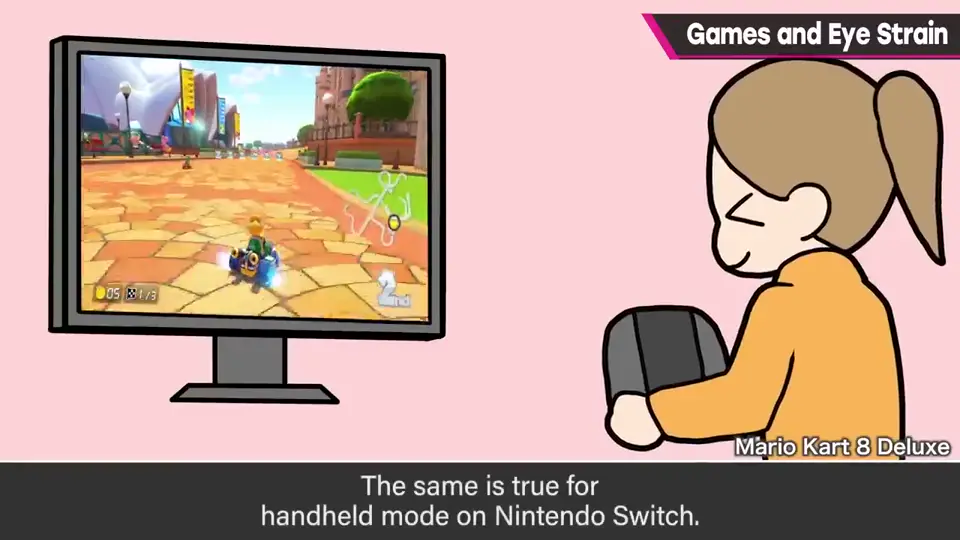
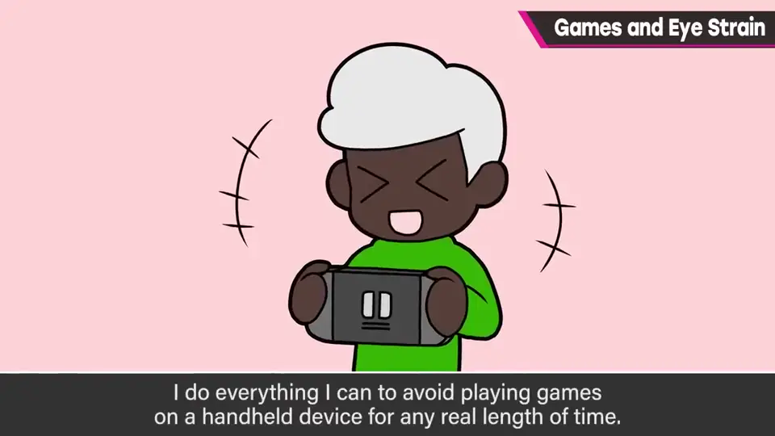
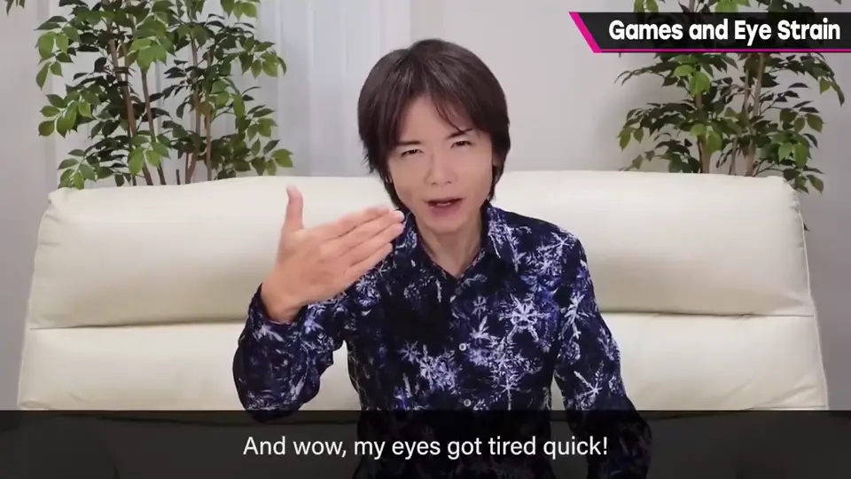
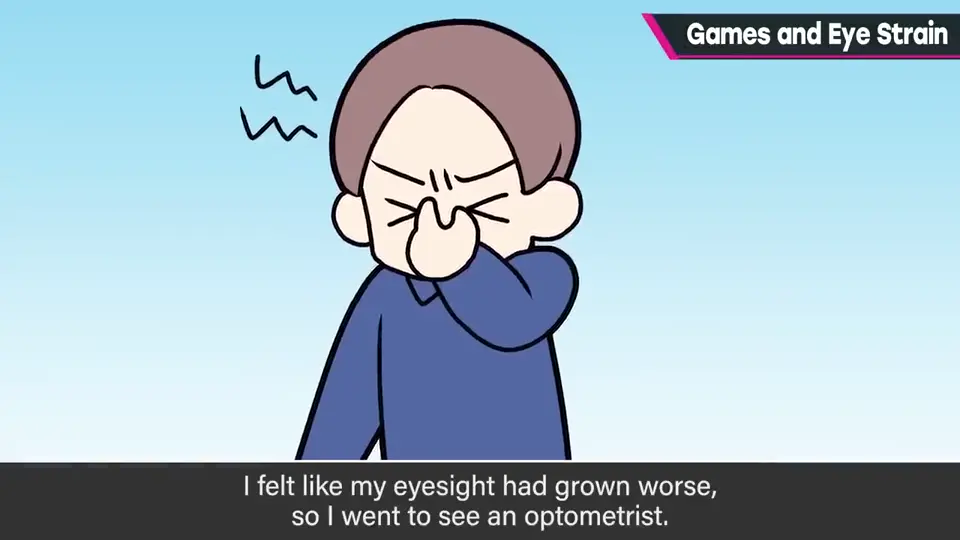
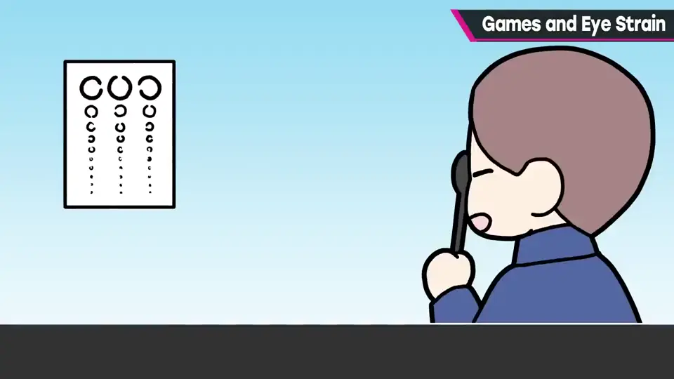
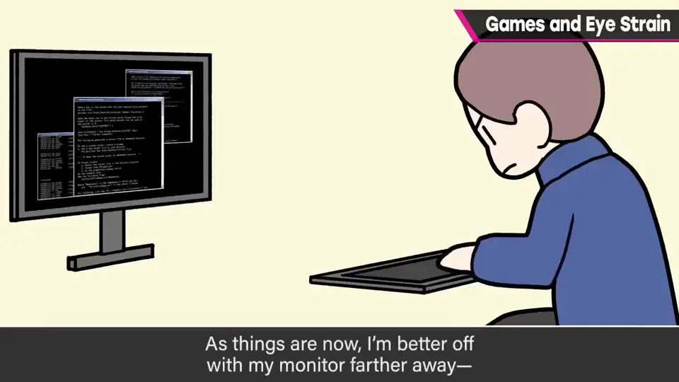
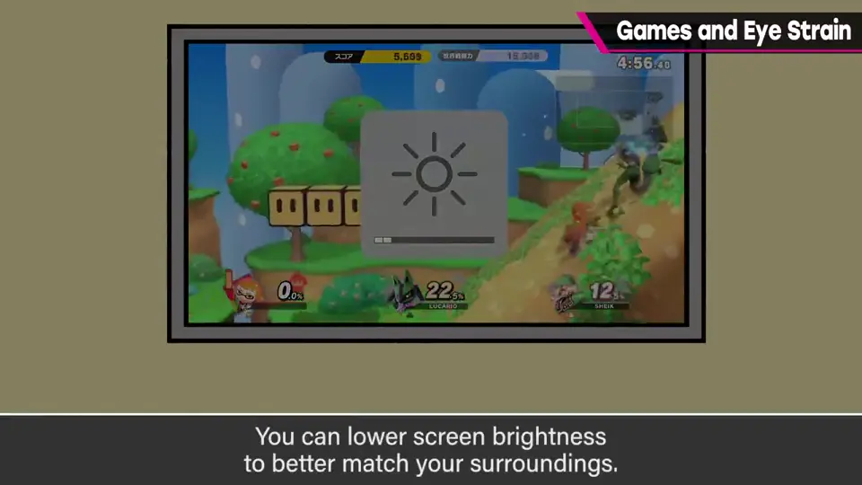
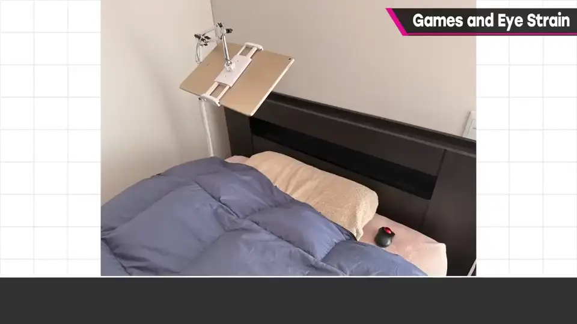
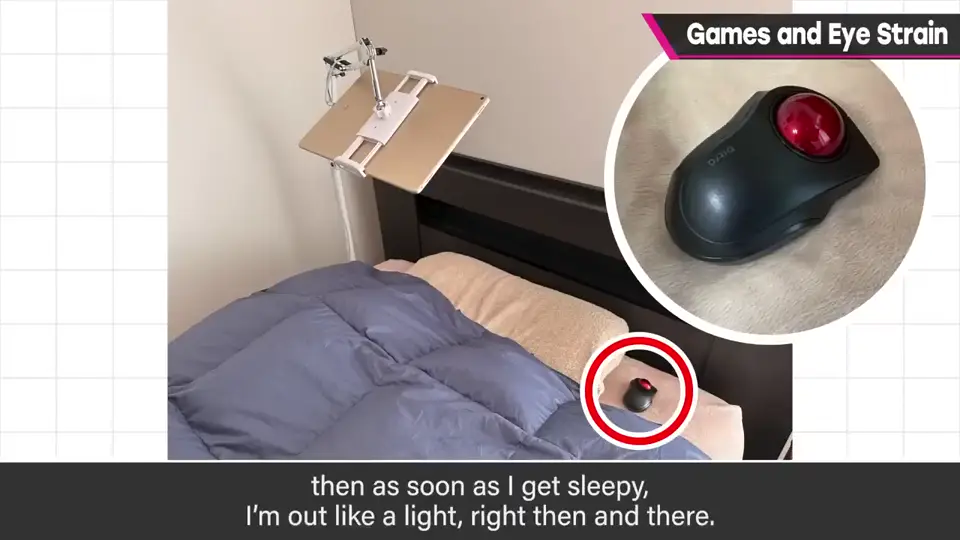

速览
樱井不太玩手机游戏——与其说不玩，不如说玩不了：比起游戏内容，问题是眼睛会极度疲劳。Switch 掌机模式也一样，所以他的 Switch 基本是电视模式专用，尽量避免在手持距离长时间玩。不久前工作环境变化，眼睛和显示器的距离变成不到 60cm，结果眼睛累得飞快——年纪的关系吗？他原本有点远视，近处对焦似乎一年比一年吃力。他视力本来算好的，也许还算幸运：《新·光神话 帕尔特娜之镜》开发结束时觉得视力急剧变差去配镜，量出来还有 2.0——也就是说以前看得更清楚；现在肯定低于 2.0，最近量是两眼 1.5。现在的他显示器远一点比较好，工作环境中把显示器拉到 1 米以上：眼睛负担小，很好；相应需要更大的显示器，机型选择变少，但舒适多了。《大乱斗 特别版》开发中他饱受极度眼疲劳和干眼困扰，结束后改善了不少。减轻眼睛负担的方法很多：让屏幕亮度与周围相配、戴眼镜、点眼药水、靠补充剂……但他觉得说到底改变环境最有效。话虽如此，他睡前还是会看书：把 iPad 吊在床上方，用蓝牙轨迹球翻页，困了就当场「咚」地睡着。这也算一种乐趣吧。
1. 不玩手游的原因 0:04
樱井不太玩手机游戏——不如说是玩不了。比起游戏内容，问题在于眼睛会极度疲劳。


Switch 掌机模式也一样，所以他的 Switch 基本是电视模式专用，尽量避免在手持距离长时间玩。
2. 视力的变化 0:33
不久前工作环境变化，眼睛离显示器不到 60cm，结果眼睛很快就累了。他原本有些远视，近处对焦一年比一年吃力。

《新·光神话》开发结束时，他觉得视力骤降去配镜，量出来还有 2.0——以前看得更清楚。最近量是两眼 1.5。


3. 把显示器放远 1:20

相应需要更大的显示器，选择变少，但舒适多了。
《特别版》开发中他饱受严重眼疲劳和干眼困扰，开发结束后改善了不少。
4. 减轻眼睛负担的方法 1:49
- 让屏幕亮度与周围的明亮程度相配。

- 戴眼镜、点眼药水、吃补充剂等。
5. 睡前读书 2:13
话虽如此，他睡前还会看书：把 iPad 吊在床上方，用蓝牙轨迹球翻页，困了就当场睡着。


自测题
1. 樱井为什么不太玩手游和 Switch 掌机模式？
近距离看屏幕眼睛会极度疲劳。 0:10
2. 他在工作环境中做了什么调整？代价是什么？
把显示器放到 1 米以上；需要更大的显示器、机型选择变少。 1:24
3. 他认为减轻眼睛负担最有效的方法是什么？
改变环境（如拉开与屏幕的距离），比调亮度、眼药水、补充剂更有效。 2:10